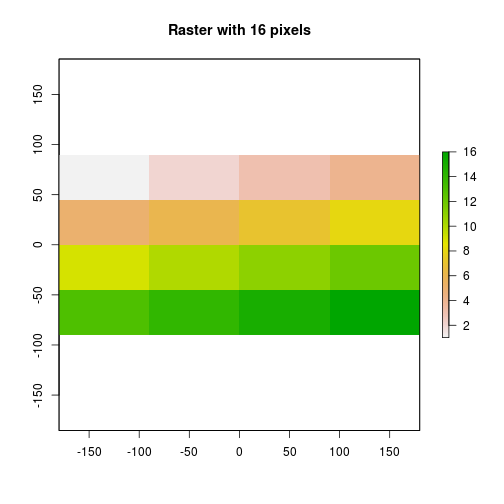

Intro to Spatial Metadata -- Spatial Resolution and Spatial Extent
Overview
Teaching: 30 min
Exercises: 30 minQuestions
TBD
Objectives
TBD
About
This lesson covers the key spatial attributes that are needed to work with spatial data including: Coordinate Reference Systems (CRS), Extent and spatial resolution.
R Skill Level: Beginner - you’ve got the basics of R down.
Goals / Objectives
After completing this activity, you will:
- Understand that there are necessary spatial metadata associated with and/or embedded in the data
- Understand that there is potentially ancillary data associated with individual elements in vector data files (like NEON tower data (point), road (line), watershed (polygon)).
Things You’ll Need To Complete This Lesson
To complete this lesson you will need the most current version of R, and preferably, RStudio loaded on your computer.
Install R Packages
-
NAME:
install.packages("NAME")
Download Data
Spatial-Temporal Data & Data Management Lesson Series: This lesson is part
of a lesson series introducing
spatial data and data management in R .
It is also part of a larger
spatio-temporal Data Carpentry Workshop
that includes working with
raster data in R ,
vector data in R
and
tabular time series in R .
Additional Resources
- Read more on coordinate systems in the QGIS documentation.
- NEON Data Skills Lesson The Relationship Between Raster Resolution, Spatial extent & Number of Pixels - in R
Spatial Metadata
There are three core spatial metadata elements that are crucial to understand in order to effectively work with spatial data:
- Coordinate Reference System (CRS),
- Extent
- Resolution
Spatial Extent
The spatial extent of a spatial object is just how much area does it cover. A map of Paris has a smaller spatial extent than a map of all of France.
Units
The units of the extent are defined by the coordinate system that the spatial data is in.
Extent in Vector Data
GRAPHIC FROM COLIN
Extent in Raster Data
The spatial extent of a raster, represents the x,y coordinates of the corners
of the raster in geographic space. This information, in addition to the cell
size or spatial resolution, tells the program how to place or render each pixel
in 2 dimensional space. Tools like R, using supporting packages such as
rgdal, and associated raster tools have functions that allow you to view and
define the extent of a new raster.
# View the extent of the raster
DEM@extent
Error in eval(expr, envir, enclos): object 'DEM' not found

Calculating Raster Extent
To calculate the extent of a raster, we first need the bottom left x,y coordinate of the raster. In the case of the UTM coordinate system which is in meters, to calculate the raster’s extent, we can add the number of columns and rows to the x,y corner coordinate location of the raster, multiplied by the resolution (the pixel size) of the raster.
Let’s explore that next.
# create a raster from the matrix
myRaster1 <- raster(nrow=4, ncol=4)
# assign some random data to the raster
myRaster1[]<- 1:ncell(myRaster1)
# view attributes of the raster
myRaster1
class : RasterLayer
dimensions : 4, 4, 16 (nrow, ncol, ncell)
resolution : 90, 45 (x, y)
extent : -180, 180, -90, 90 (xmin, xmax, ymin, ymax)
coord. ref. : +proj=longlat +datum=WGS84 +ellps=WGS84 +towgs84=0,0,0
data source : in memory
names : layer
values : 1, 16 (min, max)
# is the CRS defined?
myRaster1@crs
CRS arguments:
+proj=longlat +datum=WGS84 +ellps=WGS84 +towgs84=0,0,0
# what are the data extents?
myRaster1@extent
class : Extent
xmin : -180
xmax : 180
ymin : -90
ymax : 90
plot(myRaster1, main="Raster with 16 pixels")

Spatial Resolution
A raster consists of a series of pixels, each with the same dimensions and shape. In the case of rasters derived from airborne sensors, each pixel represents an area of space on the Earth’s surface. The size of the area on the surface that each pixel covers is known as the spatial resolution of the image. For instance, an image that has a 1 m spatial resolution means that each pixel in the image represents a 1 m x 1 m area.

Let’s open up a raster in R to see how the attributes are stored.
#load raster library
library(raster)
library(rgdal)
# Load raster in an R object called 'DEM'
DEM <- raster("data/NEON-DS-Airborne-Remote-Sensing/SJER/DTM/SJER_dtmCrop.tif")
# View raster attributes
DEM
class : RasterLayer
dimensions : 2178, 2005, 4366890 (nrow, ncol, ncell)
resolution : 1, 1 (x, y)
extent : 255693, 257698, 4109511, 4111689 (xmin, xmax, ymin, ymax)
coord. ref. : +proj=utm +zone=11 +datum=WGS84 +units=m +no_defs +ellps=WGS84 +towgs84=0,0,0
data source : /home/travis/build/datacarpentry/r-spatial-data-management-intro/_episodes_rmd/data/NEON-DS-Airborne-Remote-Sensing/SJER/DTM/SJER_dtmCrop.tif
names : SJER_dtmCrop
values : 338.93, 496.31 (min, max)
Notice that this raster (in GeoTIFF format) already has defined:
- extent
- resolution (1 in both x and y directions), and
- CRS (units in meters).
For more on the relationship between extent & resolution, visit
http://neondataskills.org/GIS-Spatial-Data/Working-With-Rasters/
##Additional Resources
ESRI help on CRS QGIS help on CRS NCEAS cheatsheets
Key Points
TBD